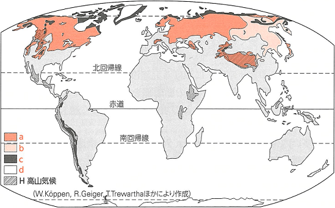
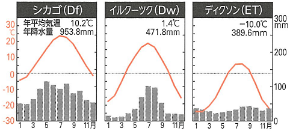
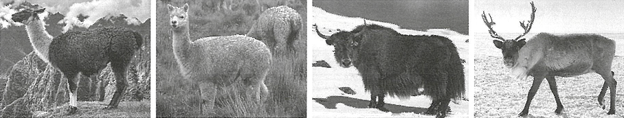

| 番号 | 問題 | 解答 |
|---|---|---|
| 1 | ユーラシア大陸や北アメリカ大陸の亜寒帯(冷帯)に広がる針葉樹林を何というか。 | タイガ |
| 2 | Df気候で、年中降水をもたらす要因となる気圧帯を何というか。 | 亜寒帯低圧帯 |
| 3 | 亜寒帯(冷帯)にみられる灰白色の酸性土壌を何というか。 | ポドゾル |
| 4 | 夏はアルプスの高地の牧場で、冬は山のふもとの牧舎で家畜を飼育する方法を何というか。 | 移牧 |
| 5 | Dw気候で冬季少雨となる要因である高気圧を何というか。 | シベリア高気圧 |
| 6 | -71.2℃と北半球で最も低い気温を記録したシベリア北東部にある寒極の地はどこか。 | オイミャコン |
| 7 | 寒冷地域でみられる夏でもとけずに凍結したままの土壌を何というか。 | 永久凍土 |
| 8 | ケッペンの気候区分でETと表記され、高緯度地方で低木やコケ類などがみられる地域を何というか。 | ツンドラ |
| 9 | ET気候でコケ類とともに広くみられる菌類と藻類が共生した複合体を何というか。 | 地衣類 |
| 10 | 農耕ができないET気候でみられる家畜を飼いながらの生活を何というか。 | 遊牧 |
| 11 | 亜寒帯(冷帯)やET気候で10をおこなっている人々に飼われている主要な家畜は何か。 | トナカイ |
| 12 | 北アメリカ大陸北部で狩猟をおこないながら生活している民族を何というか。 | イヌイット(エスキモー) |
| 13 | 12の民族が氷雪のブロックを重ねて造ったドーム型の住居を何というか。 | イグルー |
| 14 | スカンディナビア半島北部に居住する先住民族を何というか。 | サーミ |
| 15 | 現在は南極大陸やグリーンランドにしかない、大地を1年中おおう氷河を何というか。 | 氷床(大陸氷河) |
| 16 | 極圏でみられる、白夜とは逆に1日中日が昇らない現象を何というか。 | 極夜 |
| 17 | ケッペンの気候区分にはないが、標高によって変化する気候地域を指し、Hと表記される気候を何というか。 | 高山気候 |
| 18 | 17の気候を示す標高はおよそ何ｍ以上とされているか。 | 2000m |
| 19 | 同程度の低地よりH気候の地域で気温が低くなっているのは気温の逓減率によるものである。100mごとに何℃下がるか。 | 0.65℃ |
| 20 | 高山都市のひとつである、エクアドルの首都はどこか。 | キト |
| 21 | 高山都市のひとつである、コロンビアの首都はどこか。 | ボゴタ |
| 22 | アンデス山脈でおもに衣料用の毛をかるために飼われている家畜は何か。 | アルパカ |
| 23 | アンデス山脈でおもに運搬用に飼われている家畜は何か。 | リャマ |
| 24 | ヒマラヤ山脈で荷役や毛皮用に飼われている家畜は何か。 | ヤク |
| 25 | アンデス山脈で高度差による気温の変化に対応するために着られている衣服は何か。 | ポンチョ |


